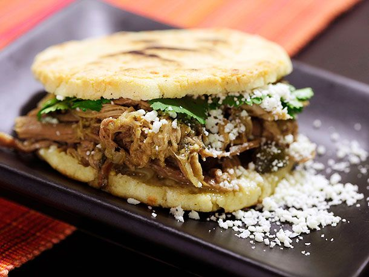

Arepas

Description
Arepas are a type of food made of ground maize dough stuffed with a filling, eaten in the northern region
of South America since pre-Columbian times, and notable primarily in the cuisine of Colombia and Venezuela.
It is commonly eaten in those countries and can be served with accompaniments such as cheese, cuajada, various meats,
chicken, avocado, or diablito. It can also be split to make sandwiches. Sizes, maize types, and added ingredients vary
its preparation. It is similar to the Mexican gordita, the Salvadoran pupusa, the Ecuadorian tortilla de maiz, and the
Panamanian tortilla or changa. *Description from Wikipedia.
Ingredients
- 2 1/2 cups of lukewarm water
- 1 teaspoon salt
- 2 cups pre-cooked white cornmeal
- 1/4 cup vegetable oil
Steps
Stir water and salt together in a medium bowl; gradually stir in cornmeal with your fingers until the mixture forms a soft, moist, malleable dough.
Form dough into eight 2-inch diameter balls; pat each ball to flatten into a 3/8-inch-thick arepa patty.
Heat oil in a large skillet over medium heat; fry arepas in batches until golden brown, about 4 to 5 minutes per side. Transfer cooked arepas to a paper towel-lined plate to drain until cool enough to handle.
Slice halfway through each arepa horizontally with a thin serrated knife to form a pita-like pocket.
Fill it with whatever you like!
Recipe from this website.